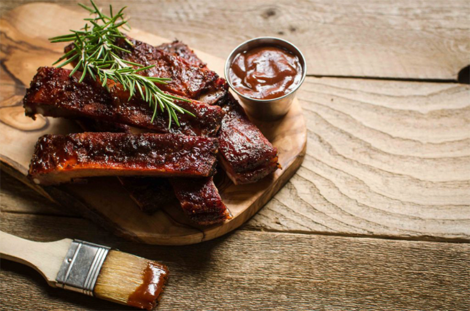
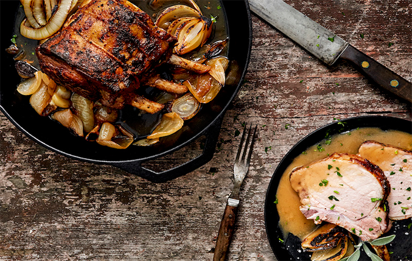
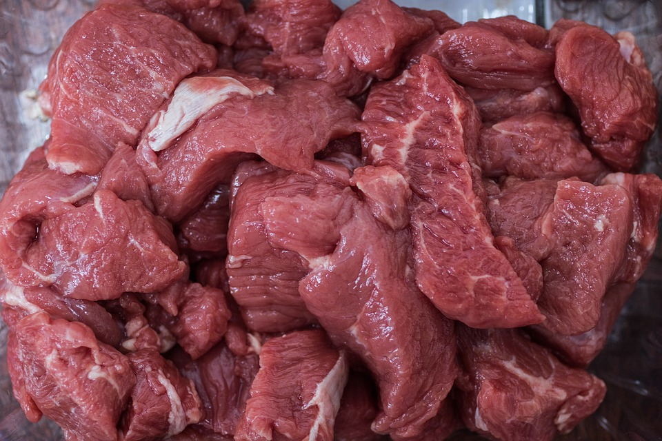
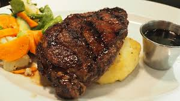
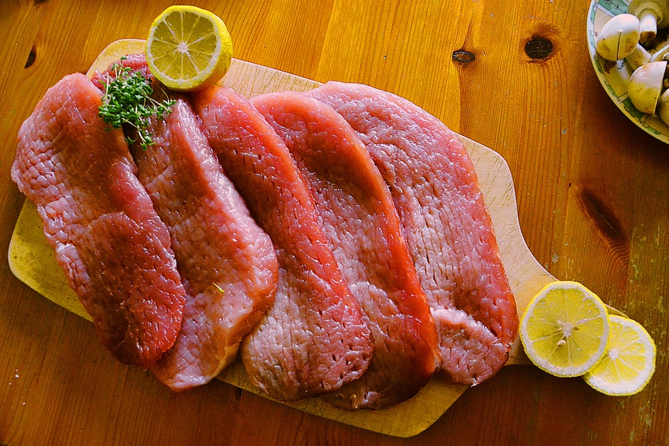
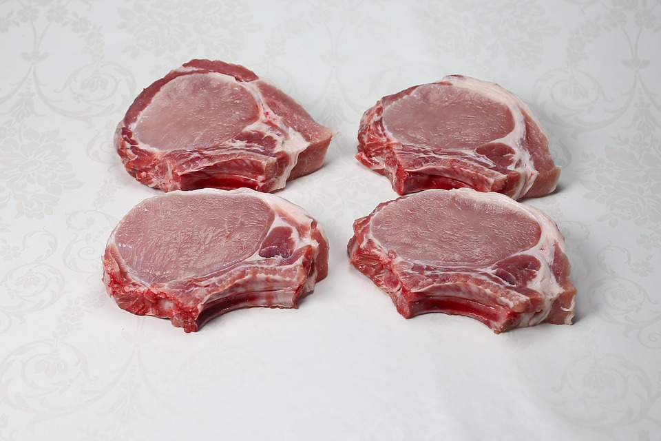

호로록~ 맛있는 국물요리 추천! 굴 미역국 맛있게 끓이는 법 - 겨울철 저녁 메뉴 추천, 입맛 돋구는 굴을 이용한 미역국! 청정원에서 알려드리는 레시피를 따라해보세요.
푸드를 아는 사람들의 쿠킹 스튜디오
요리공방에서는 가족끼리, 연인끼리 함께할 수 있는 다양한 형태의 쿠킹 클래스가 진행됩니다.
청정원 요리공방
쿡방, 먹방의 시대를 넘어 모두가 유리를 즐기는 시대!요리공방에서는 가족끼리, 연인끼리 함께할 수 있는 다양한 형태의 쿠킹 클래스가 진행됩니다.
-
-
푸드캐스트
더 많은 스토리를 보시려면 +푸드 실험실 어떻게 삶아야 면발이 가장 쫄깃할까?
푸드실험실 [푸드실험실] 꽁꽁 얼어버린 냉동고기 해동법보틀레시피 깨끗하게 소독한 유리병에 샐러드, 냉파스타, 쿠키, 피클 만드는 법을 소개합니다. -
푸드노하우
더 많은 노하우를 보시려면 +[식탁이 있는 풍경] 정원人 여러분들의 특별한 요리
노하우가 담긴 레시피를 만나보세요청정원 레시피 청정원 쉐프님들의 특별한
노하우를 공개합니다!
함께 만들어 보아요~정원e샵 대상의 다양한 제품을 저렴하게 -
청정원 프렌즈
청정원 프렌즈 자세히보기 +정원이가 청정원 프렌즈
여러분을 위해 특별히 준비한
정원이의 푸드박스! 다양하고 푸짐한 청정원 제품을
사용하실 수 있는 기회를 놓치지 마세요.정원이의 프렌즈 패널 직접 사용해보시고 남겨주신 패널's 톡에서 청정원 신제품 정보를 만나세요.푸드 에디터 톡청정모임 톡
-
-
푸드 캐스트 더 많은 스토리를 보시려면푸드캐스트
[푸드실험실] 꽁꽁 얼어버린 냉동고기 해동법 얼음인지 고기인지 구분이 안 될 정도로 꽁꽁 얼어버린 고기! 어떤 방법으로 해동시키는게 가장 좋을까요? 냉동고기 해동 방법 노하우! 바로가기 -
푸드 노하우 더 많은 노하우를 보시려면
-
청정원 프렌즈 더 많은 노하우를 보시려면
정원이의 푸드박스
정원이가 청정원 프렌즈
여러분을 위해 특별히 준비한
정원이의 푸드박스! 다양하고 푸짐한 청정원 제품을
사용하실 수 있는 기회를 놓치지 마세요.푸드 에디터 톡 활발하게 활동중인 SNS푸드 에디터 분들의
후기를 모았습니다.청정모임 톡 청정모임톡 후기를 모았습니다.